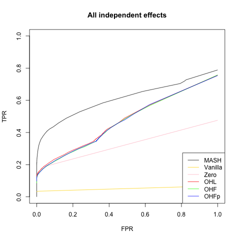
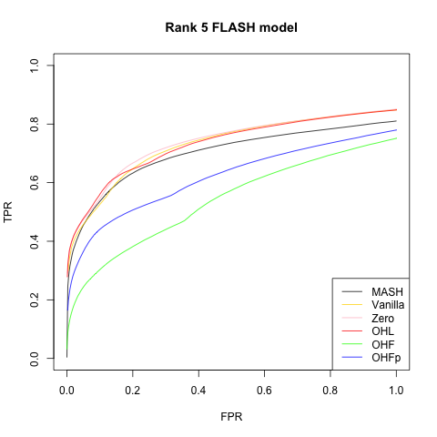
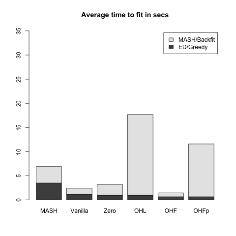
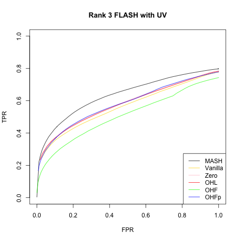
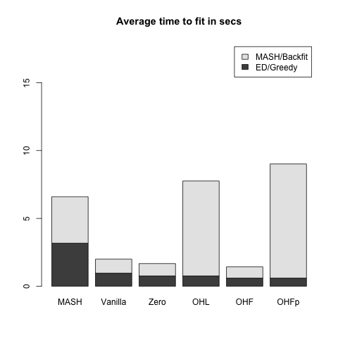

MASH v FLASH simulation results
Last updated: 2018-07-22
workflowr checks: (Click a bullet for more information)-
✔ R Markdown file: up-to-date
Great! Since the R Markdown file has been committed to the Git repository, you know the exact version of the code that produced these results.
-
✔ Environment: empty
Great job! The global environment was empty. Objects defined in the global environment can affect the analysis in your R Markdown file in unknown ways. For reproduciblity it’s best to always run the code in an empty environment.
-
✔ Seed:
set.seed(20180609)The command
set.seed(20180609)was run prior to running the code in the R Markdown file. Setting a seed ensures that any results that rely on randomness, e.g. subsampling or permutations, are reproducible. -
✔ Session information: recorded
Great job! Recording the operating system, R version, and package versions is critical for reproducibility.
-
Great! You are using Git for version control. Tracking code development and connecting the code version to the results is critical for reproducibility. The version displayed above was the version of the Git repository at the time these results were generated.✔ Repository version: 179099b
Note that you need to be careful to ensure that all relevant files for the analysis have been committed to Git prior to generating the results (you can usewflow_publishorwflow_git_commit). workflowr only checks the R Markdown file, but you know if there are other scripts or data files that it depends on. Below is the status of the Git repository when the results were generated:
Note that any generated files, e.g. HTML, png, CSS, etc., are not included in this status report because it is ok for generated content to have uncommitted changes.Ignored files: Ignored: .DS_Store Ignored: .Rhistory Ignored: .Rproj.user/ Ignored: docs/.DS_Store Ignored: docs/images/.DS_Store Ignored: output/.DS_Store Unstaged changes: Modified: analysis/MASHvFLASHgtex2.Rmd Modified: analysis/MASHvFLASHsims2.Rmd Modified: analysis/mashvflash.Rmd Modified: code/sims2.R Modified: output/README.md Modified: output/sims2mse.rds Modified: output/sims2prash.rds Modified: output/sims2prm.rds Modified: output/sims2prpn.rds
Expand here to see past versions:
| File | Version | Author | Date | Message |
|---|---|---|---|---|
| Rmd | 179099b | Jason Willwerscheid | 2018-07-22 | wflow_publish(c(“analysis/MASHvFLASHgtex.Rmd”, |
| html | b7181f2 | Jason Willwerscheid | 2018-07-22 | Build site. |
| Rmd | 7f05edf | Jason Willwerscheid | 2018-07-22 | wflow_publish(“analysis/MASHvFLASHsims.Rmd”) |
| html | 69cecbc | Jason Willwerscheid | 2018-06-20 | Build site. |
| Rmd | abf0f70 | Jason Willwerscheid | 2018-06-20 | workflowr::wflow_publish(c(“analysis/intro.Rmd”, |
| html | 2d8f091 | Jason Willwerscheid | 2018-06-20 | Build site. |
| Rmd | eda9441 | Jason Willwerscheid | 2018-06-20 | wflow_publish(“analysis/MASHvFLASHsims.Rmd”) |
| html | 90dd578 | Jason Willwerscheid | 2018-06-19 | Build site. |
| Rmd | 3cf7f0c | Jason Willwerscheid | 2018-06-19 | wflow_publish(“analysis/MASHvFLASHsims.Rmd”) |
| html | 6fd3720 | Jason Willwerscheid | 2018-06-19 | Build site. |
| html | 358412a | Jason Willwerscheid | 2018-06-15 | Build site. |
| Rmd | a9a9e11 | Jason Willwerscheid | 2018-06-15 | wflow_publish(“analysis/MASHvFLASHsims.Rmd”) |
| html | 726168a | Jason Willwerscheid | 2018-06-15 | Build site. |
| html | aa46b38 | Jason Willwerscheid | 2018-06-15 | Build site. |
| Rmd | d3f8191 | Jason Willwerscheid | 2018-06-15 | wflow_publish(“analysis/MASHvFLASHsims.Rmd”) |
| html | c2699a6 | Jason Willwerscheid | 2018-06-15 | Build site. |
| Rmd | 3554f17 | Jason Willwerscheid | 2018-06-15 | wflow_publish(“analysis/MASHvFLASHsims.Rmd”) |
| html | 03dc24a | Jason Willwerscheid | 2018-06-15 | Build site. |
| Rmd | 0c0d6b2 | Jason Willwerscheid | 2018-06-15 | wflow_publish(“analysis/MASHvFLASHsims.Rmd”) |
Introduction
Here I compare MASH and FLASH fits to data simulated from various MASH and FLASH models. In addition to comparing the performance of the various FLASH fits, I was interested in seeing how FLASH performed on data generated from a MASH model (and vice versa). For code, see below.
Fitting methods
The MASH fit is produced following the recommendations in the MASH vignettes (using both canonical matrices and data-driven matrices).
Five FLASH fits are produced. The first two serve as baselines. The “Vanilla” FLASH fit uses the default method to fit a flash object, adding up to ten factors greedily and then backfitting. The “Zero” fit does the same, but sets var_type = "zero" rather than using the default parameter option var_type = "by_column". That is, the “Vanilla” fit estimates the residual variances, with the constraint that the variances are identical across any given column, while the “Zero” fit fixes the standard errors at their known values (here, S = 1).
The remaining three fits also use parameter option var_type = "zero". FLASH-OHL (for “one-hots last”) adds up to ten factors greedily, then adds a one-hot vector for each row in the data matrix, then backfits the whole thing. As described in the vignette, the purpose of the one-hot vectors is to account for certain “canonical” covariance structures.
FLASH-OHF (for “one-hots first”) adds the one-hot vectors first, then backfits, then greedily adds up to ten factors. These greedily added factors are not subsequently backfit, so FLASH-OHF can be much faster than FLASH-OHL. FLASH-OHF+ begins with the FLASH-OHF fit and then performs a second backfitting.
Simulations
All simulated datasets \(Y\) are of dimension 25 x 1000. In each case, \(Y = X + E\), where \(X\) is the matrix of “true” effects and \(E\) is a matrix of \(N(0, 1)\) noise. One simulation is from the null model, three are generated according to a MASH model, and three are generated from a FLASH model. See the individual sections below for details.
The MASH fits are evaluated using built-in functions get_pm() to calculate MSE, get_psd() to calculate confidence intervals, and get_lfsr() to calculate true and false positive rates.
For the FLASH fits, only MSE is calculated using a built-in function (flash_get_fitted_values()). Confidence intervals and true and false positive rates are calculated by sampling from the posterior using function flash_sampler(). For details, see the code below.
Results overview
Without the one-hot vectors, the Vanilla and Zero FLASH fits perform poorly on the MASH simulations (see the ROC curves below). The other FLASH fits all perform similarly to one another. They are outperformed by MASH, especially at low FPR thresholds, but this is expected since the data are, after all, generated from the MASH model. Of these three FLASH methods, OHF is (as expected) the fastest, and is about twice as fast as the slowest method, OHF+.
The Vanilla and Zero fits do much better on the FLASH simulations (again, as expected, since the data are now generated from the FLASH model). More surprisingly, the MASH fit does nearly as well (and, in some cases, better) than the FLASH fits. OHF is again the fastest of the three FLASH fits that include one-hot vectors, but it performs much more poorly than the other two methods. On the rank-5 model, OHF+ also performs poorly relative to OHL.
Overall, the OHL method consistently performs best among the three FLASH methods that include one-hot vectors. It is slower than OHF, and sometimes even slower than OHF+, but the performance gains on the FLASH data are substantial.
Null model
Here the entries of \(X\) are all zero.
| MASH | Vanilla | Zero | OHL | OHF | OHFp | |
|---|---|---|---|---|---|---|
| MSE | 0.003 | 0 | 0 | 0.003 | 0.003 | 0.003 |
| 95% CI cov | 0.864 | 1 | 1 | 1.000 | 1.000 | 1.000 |
Model with independent effects
Now the columns \(X_{:, j}\) are either identically zero (with probability 0.8) or identically nonzero. In the latter case, the entries of the \(j\)th column of \(X\) are i.i.d. \(N(0, 1)\).
| MASH | Vanilla | Zero | OHL | OHF | OHFp | |
|---|---|---|---|---|---|---|
| MSE | 0.016 | 0.019 | 0.017 | 0.019 | 0.020 | 0.020 |
| 95% CI cov | 0.991 | 0.981 | 0.981 | 0.985 | 0.985 | 0.985 |

Rank 1 FLASH model
This is the FLASH model \(X = LF\), where \(L\) is an \(n\) by \(k\) matrix and \(F\) is a \(k\) by \(p\) matrix. In this first simulation, \(k = 1\). 80% of the entries in \(F\) and 50% of the entries in \(L\) are equal to zero. The other entries are i.i.d. \(N(0, 1)\).
| MASH | Vanilla | Zero | OHL | OHF | OHFp | |
|---|---|---|---|---|---|---|
| MSE | 0.023 | 0.016 | 0.015 | 0.017 | 0.035 | 0.018 |
| 95% CI cov | 0.974 | 0.931 | 0.934 | 0.950 | 0.968 | 0.950 |

Rank 5 FLASH model
This is the same as above with \(k = 5\) and with only 20% of the entries in \(L\) equal to zero.
| MASH | Vanilla | Zero | OHL | OHF | OHFp | |
|---|---|---|---|---|---|---|
| MSE | 0.115 | 0.083 | 0.077 | 0.077 | 0.284 | 0.184 |
| 95% CI cov | 0.929 | 0.880 | 0.894 | 0.905 | 0.937 | 0.876 |
 
Rank 3 FLASH model with UV
This is similar to the above with \(k = 3\) and with 30% of the rows in \(L\) equal to zero. In addition, a dense rank-one matrix \(W\) is added to \(X\) to mimic the effects of unwanted variation. Here, \(W = UV\), with \(U\) an \(n\) by 1 vector and \(V\) a 1 by \(p\) vector, both of which have entries distributed \(N(0, 0.25)\).
| MASH | Vanilla | Zero | OHL | OHF | OHFp | |
|---|---|---|---|---|---|---|
| MSE | 0.086 | 0.083 | 0.080 | 0.081 | 0.169 | 0.101 |
| 95% CI cov | 0.936 | 0.878 | 0.892 | 0.900 | 0.950 | 0.907 |
 
Code
for simulating datasets…
## SIMULATION FUNCTIONS -------------------------------------------------
# n is number of conditions, p is number of genes
# Noise is i.i.d. N(0, 1)
get_E <- function(n, p, sd = 1) {
matrix(rnorm(n * p, 0, sd), n, p)
}
# Simulate from null model ----------------------------------------------
null_sim <- function(n, p, seed = NULL) {
set.seed(seed)
Y <- get_E(n, p)
true_Y <- matrix(0, n, p)
list(Y = Y, true_Y = true_Y)
}
# Simulate from MASH model ----------------------------------------------
# Sigma is list of covariance matrices
# pi[j] is probability that effect j has covariance Sigma[[j]]
# s is sparsity (percentage of null effects)
mash_sim <- function(n, p, Sigma, pi = NULL, s = 0.8, seed = NULL) {
set.seed(NULL)
if (is.null(pi)) {
pi = rep(1, length(Sigma)) # default to uniform distribution
}
assertthat::are_equal(length(pi), length(Sigma))
for (j in length(Sigma)) {
assertthat::are_equal(dim(Sigma[j]), c(n, n))
}
pi <- pi / sum(pi) # normalize pi to sum to one
which_sigma <- sample(1:length(pi), p, replace=TRUE, prob=pi)
nonnull_fx <- sample(1:p, floor((1 - s)*p), replace=FALSE)
X <- matrix(0, n, p)
for (j in nonnull_fx) {
X[, j] <- MASS::mvrnorm(1, rep(0, n), Sigma[[which_sigma[j]]])
}
Y <- X + get_E(n, p)
list(Y = Y, true_Y = X)
}
# Simulate from FLASH model ---------------------------------------------
# fs is sparsity of factors (percentage of null effects)
# fvar is variance of effects (generated from normal distribution)
# ls is sparsity of loadings
# lvar is variance of loadings
# UVvar is variance of dense rank-one matrix included to mimic something
# like unwanted variation (set it to 0 to ignore it)
flash_sim <- function(n, p, k, fs, fvar, ls, lvar, UVvar = 0, seed = NULL) {
set.seed(seed)
nonnull_ll <- matrix(sample(c(0, 1), n*k, TRUE, c(ls, 1 - ls)), n, k)
LL <- nonnull_ll * matrix(rnorm(n*k, 0, sqrt(lvar)), n, k)
nonnull_ff <- matrix(sample(c(0, 1), k*p, TRUE, c(fs, 1 - fs)), k, p)
FF <- nonnull_ff * matrix(rnorm(k*p, 0, sqrt(fvar)), k, p)
X <- LL %*% FF
Y <- X + get_E(n, p)
# add unwanted variation
Y <- Y + outer(rnorm(n, 0, sqrt(UVvar)), rnorm(p, 0, sqrt(UVvar)))
list(Y = Y, true_Y = X)
}
## SIMULATIONS ----------------------------------------------------------
# Functions to generate seven types of datasets. One is null; three are
# from the MASH model; three are from the FLASH model.
sim_fns <- function(n, p, s, mashvar, fvar, lvar, UVvar) {
# 1. Everything is null
sim_null <- function(){ null_sim(n, p) }
Sigma <- list()
Sigma[[1]] <- diag(rep(mashvar, n))
# 2. Effects are independent across conditions
sim_ind <- function(){ mash_sim(n, p, Sigma) }
Sigma[[2]] <- matrix(mashvar, n, n)
# 3. Effects are either independent or shared
sim_indsh <- function(){ mash_sim(n, p, Sigma) }
for (j in 1:n) {
Sigma[[2 + j]] <- matrix(0, n, n)
Sigma[[2 + j]][j, j] <- mashvar
}
pi <- c(n, n, rep(1, n))
# 4. Effects are independent, shared, or unique to a single condition
sim_mash <- function(){ mash_sim(n, p, Sigma) }
# 5. Rank one model
sim_rank1 <- function(){ flash_sim(n, p, 1, s, fvar, 0.5, lvar) }
# 6. Rank 5 model
sim_rank5 <- function(){ flash_sim(n, p, 5, s, fvar, 0.2, lvar) }
# 7. Rank 3 model with unwanted variation
sim_UV <- function(){ flash_sim(n, p, 3, s, fvar, 0.3, lvar, UVvar) }
c(sim_null, sim_ind, sim_indsh, sim_mash, sim_rank1, sim_rank5, sim_UV)
}
sim_names <- c("Null simulation", "All independent effects",
"Independent and shared", "Independent, shared, and unique",
"Rank 1 FLASH model", "Rank 5 FLASH model",
"Rank 3 FLASH with UV")…for fitting MASH and FLASH objects…
# Fit using FLASH -------------------------------------------------------
# Methods: 1. Vanilla, 2. Zero, 3. OHL, 4. OHF, 5. OHF+
fit_flash <- function(Y, Kmax, methods=1:5, ebnm_fn="ebnm_pn") {
n <- nrow(Y)
fits <- list()
timing <- list()
# Vanilla FLASH
if (1 %in% methods) {
timing$Vanilla <- list()
data <- flash_set_data(Y)
t0 <- Sys.time()
fl <- flash_add_greedy(data, Kmax, var_type="by_column", ebnm_fn=ebnm_fn)
t1 <- Sys.time()
timing$Vanilla$greedy <- t1 - t0
fits$Vanilla <- flash_backfit(data, fl, var_type="by_column", ebnm_fn=ebnm_fn)
timing$Vanilla$backfit <- Sys.time() - t1
}
data <- flash_set_data(Y, S = 1)
# Zero and OHL
if (2 %in% methods || 3 %in% methods) {
t0 <- Sys.time()
fl <- flash_add_greedy(data, Kmax, var_type="zero", ebnm_fn=ebnm_fn)
t1 <- Sys.time()
if (2 %in% methods) {
timing$Zero <- list()
timing$Zero$greedy <- t1 - t0
fits$Zero <- flash_backfit(data, fl, nullcheck=F, var_type="zero", ebnm_fn=ebnm_fn)
timing$Zero$backfit <- Sys.time() - t1
}
if (3 %in% methods) {
timing$OHL <- list()
timing$OHL$greedy <- t1 - t0
fl <- flash_add_fixed_l(data, diag(rep(1, n)), fl)
t2 <- Sys.time()
fits$OHL <- flash_backfit(data, fl, nullcheck=F, var_type="zero", ebnm_fn=ebnm_fn)
timing$OHL$backfit <- Sys.time() - t2
}
}
# OHF and OHF+
if (4 %in% methods || 5 %in% methods) {
t0 <- Sys.time()
fl <- flash_add_fixed_l(data, diag(rep(1, n)))
fl <- flash_backfit(data, fl, nullcheck=F, var_type="zero", ebnm_fn=ebnm_fn)
t1 <- Sys.time()
fl <- flash_add_greedy(data, Kmax, fl, var_type="zero", ebnm_fn=ebnm_fn)
t2 <- Sys.time()
if (4 %in% methods) {
fits$OHF <- fl
timing$OHF$backfit <- t1 - t0
timing$OHF$greedy <- t2 - t1
}
if (5 %in% methods) {
fits$OHFp <- flash_backfit(data, fl, nullcheck=F, var_type="zero", ebnm_fn=ebnm_fn)
timing$OHFp$backfit <- (t1 - t0) + (Sys.time() - t2)
timing$OHFp$greedy <- t2 - t1
}
}
# timing$total <- Reduce(`+`, timing)
list(fits = fits, timing = timing)
}
# Fit using MASH -------------------------------------------------------
fit_mash <- function(Y, ed=T) {
data <- mash_set_data(t(Y))
timing <- list()
# time to create canonical matrices is negligible
U = cov_canonical(data)
if (ed) {
t0 <- Sys.time()
m.1by1 <- mash_1by1(data)
strong <- get_significant_results(m.1by1, 0.05)
U.pca <- cov_pca(data, 5, strong)
U.ed <- cov_ed(data, U.pca, strong)
U <- c(U, U.ed)
timing$ed <- Sys.time() - t0
}
t0 <- Sys.time()
m <- mash(data, U)
timing$mash <- Sys.time() - t0
# timing$total <- Reduce(`+`, timing)
list(m = m, timing = timing)
}…for evaluating performance…
# Evaluate methods based on MSE, CI coverage, and TPR vs. FPR -----------
flash_diagnostics <- function(fl, Y, true_Y, nsamp) {
MSE <- flash_mse(fl, true_Y)
# Sample from FLASH fit to estimate CI coverage and TPR vs. FPR
fl_sampler <- flash_sampler(Y, fl, fixed="loadings")
fl_samp <- fl_sampler(nsamp)
CI <- flash_ci(fl_samp, true_Y)
ROC <- flash_roc(fl, fl_samp, true_Y)
list(MSE = MSE, CI = CI, TP = ROC$TP, FP = ROC$FP,
n_nulls = ROC$n_nulls, n_nonnulls = ROC$n_nonnulls)
}
mash_diagnostics <- function(m, true_Y) {
MSE <- mash_mse(m, true_Y)
CI <- mash_ci(m, true_Y)
ROC <- mash_roc(m, true_Y)
list(MSE = MSE, CI = CI, TP = ROC$TP, FP = ROC$FP,
n_nulls = ROC$n_nulls, n_nonnulls = ROC$n_nonnulls)
}
# MSE of posterior means (FLASH) ----------------------------------------
flash_mse <- function(fl, true_Y) {
mean((flash_get_fitted_values(fl) - true_Y)^2)
}
# MSE for MASH ----------------------------------------------------------
mash_mse <- function(m, true_Y) {
mean((get_pm(m) - t(true_Y))^2)
}
# 95% CI coverage for FLASH ---------------------------------------------
flash_ci <- function(fl_samp, true_Y) {
n <- nrow(true_Y)
p <- ncol(true_Y)
nsamp <- length(fl_samp)
flat_samp <- matrix(0, nrow=n*p, ncol=nsamp)
for (i in 1:nsamp) {
flat_samp[, i] <- as.vector(fl_samp[[i]])
}
CI <- t(apply(flat_samp, 1, function(x) {quantile(x, c(0.025, 0.975))}))
mean((as.vector(true_Y) >= CI[, 1]) & (as.vector(true_Y) <= CI[, 2]))
}
# 95% CI coverage for MASH ----------------------------------------------
mash_ci <- function(m, true_Y) {
Y <- t(true_Y)
mean((Y > get_pm(m) - 1.96 * get_psd(m))
& (Y < get_pm(m) + 1.96 * get_psd(m)))
}
# LFSR for FLASH --------------------------------------------------------
flash_lfsr <- function(fl_samp) {
nsamp <- length(fl_samp)
n <- nrow(fl_samp[[1]])
p <- ncol(fl_samp[[1]])
pp <- matrix(0, nrow=n, ncol=p)
pn <- matrix(0, nrow=n, ncol=p)
for (i in 1:nsamp) {
pp <- pp + (fl_samp[[i]] > 0)
pn <- pn + (fl_samp[[i]] < 0)
}
1 - pmax(pp, pn) / nsamp
}
# Quantities for plotting ROC curves -----------------------------------
flash_roc <- function(fl, fl_samp, true_Y, step=0.01) {
roc_data(flash_get_fitted_values(fl), true_Y, flash_lfsr(fl_samp), step)
}
mash_roc <- function(m, true_Y, step=0.01) {
roc_data(get_pm(m), t(true_Y), get_lfsr(m), step)
}
roc_data <- function(pm, true_Y, lfsr, step) {
correct_sign <- pm * true_Y > 0
is_null <- true_Y == 0
n_nulls <- sum(is_null)
n_nonnulls <- length(true_Y) - n_nulls
ts <- seq(0, 1, by=step)
tp <- rep(0, length(ts))
fp <- rep(0, length(ts))
for (t in 1:length(ts)) {
signif <- lfsr <= ts[t]
tp[t] <- sum(signif & correct_sign)
fp[t] <- sum(signif & is_null)
}
list(ts = ts, TP = tp, FP = fp, n_nulls = n_nulls, n_nonnulls = n_nonnulls)
}
# empirical false sign rate vs. local false sign rate
# efsr_by_lfsr <- function(pm, true_Y, lfsr, step) {
# pred_signs <- sign(pm)
# pred_zeros <- pred_signs == 0
# pred_signs[pred_zeros] <- sample(c(0, 1), length(pred_zeros), replace=T)
#
# gotitright <- (pred_signs == sign(true_Y))
#
# nsteps <- floor(.5 / step)
# efsr_by_lfsr <- rep(0, nsteps)
# for (k in 1:nsteps) {
# idx <- (lfsr >= (step * (k - 1)) & lfsr < (step * k))
# efsr_by_lfsr[k] <- ifelse(sum(idx) == 0, NA,
# 1 - sum(gotitright[idx]) / sum(idx))
# }
# efsr_by_lfsr
# }…for running simulations and plotting results…
run_sims <- function(sim_fn, nsims, plot_title, fpath) {
#suppressMessages(
#suppressWarnings(
#capture.output(
if (nsims == 1) {
res = run_one_sim(sim_fn)
} else {
res = run_many_sims(sim_fn, nsims)
}
#)
#)
#)
saveRDS(output_res_mat(res), paste0(fpath, "res.rds"))
if (!(plot_title == "Null simulation")) {
png(paste0(fpath, "ROC.png"))
plot_ROC(res, plot_title)
dev.off()
}
png(paste0(fpath, "time.png"))
plot_timing(res)
dev.off()
}
run_many_sims <- function(sim_fn, nsims) {
res <- list()
combined_res <- list()
for (i in 1:nsims) {
res[[i]] <- run_one_sim(sim_fn)
}
elems <- names(res[[1]])
for (elem in elems) {
combined_res[[elem]] <- list()
subelems <- names(res[[1]][[elem]])
for (subelem in subelems) {
combined_res[[elem]][[subelem]] <- list()
subsubelems <- names(res[[1]][[elem]][[subelem]])
for (subsubelem in subsubelems) {
tmp <- lapply(res, function(x) {x[[elem]][[subelem]][[subsubelem]]})
combined_res[[elem]][[subelem]][[subsubelem]] <- Reduce(`+`, tmp) / nsims
}
}
}
combined_res
}
run_one_sim <- function(sim_fn, Kmax = 10, nsamp=200) {
data <- do.call(sim_fn, list())
# If there are no strong signals, trying to run ED throws an error, so
# we need to do some error handling to fit the MASH object
try(mfit <- fit_mash(data$Y))
if (!exists("mfit")) {
mfit <- fit_mash(data$Y, ed=F)
mfit$timing$ed = as.difftime(0, units="secs")
}
flfits <- fit_flash(data$Y, Kmax)
message("Running MASH diagnostics")
mres <- mash_diagnostics(mfit$m, data$true_Y)
message("Running FLASH diagnostics")
flres <- list()
methods <- names(flfits$fits)
for (method in methods) {
flres[[method]] <- flash_diagnostics(flfits$fits[[method]], data$Y,
data$true_Y, nsamp)
}
# Give mash and flash the same structure so we can combine multiple sims
mash_timing = list()
mash_timing$mash <- mfit$timing
mash_res = list()
mash_res$mash <- mres
list(mash_timing = mash_timing, mash_res = mash_res,
flash_timing = flfits$timing, flash_res = flres)
}
output_res_mat <- function(res) {
mat <- c(res$mash_res$mash$MSE, res$mash_res$mash$CI)
methods <- names(res$flash_res)
for (method in methods) {
mat <- cbind(mat, c(res$flash_res[[method]]$MSE,
res$flash_res[[method]]$CI))
}
rownames(mat) = c("MSE", "95% CI cov")
colnames(mat) = c("MASH", methods)
mat
}
plot_timing <- function(res, units="secs") {
data <- as.numeric(c(res$mash_timing$mash$ed,
res$mash_timing$mash$mash),
units=units)
methods <- names(res$flash_timing)
for (method in methods) {
data <- cbind(data,
as.numeric(c(res$flash_timing[[method]]$greedy,
res$flash_timing[[method]]$backfit),
units=units))
}
barplot(data, axes=T,
main=paste("Average time to fit in", units),
names.arg = c("MASH", methods),
legend.text = c("ED/Greedy", "MASH/Backfit"),
ylim = c(0, max(colSums(data))*2))
# (increasing ylim is easiest way to deal with legend getting in way)
}
plot_ROC <- function(res, main="ROC curve",
colors=c("gold", "pink", "red", "green", "blue")) {
# Number of nulls and nonnulls are identical across methods
n_nonnulls <- res$mash_res$mash$n_nonnulls
n_nulls <- res$mash_res$mash$n_nulls
m_y <- res$mash_res$mash$TP / n_nonnulls
m_x <- res$mash_res$mash$FP / n_nulls
plot(m_x, m_y, xlim=c(0, 1), ylim=c(0, 1), type='l',
xlab='FPR', ylab='TPR', main=main)
methods <- names(res$flash_res)
idx <- 0
for (method in methods) {
idx <- idx + 1
y <- res$flash_res[[method]]$TP / n_nonnulls
x <- res$flash_res[[method]]$FP / n_nulls
lines(x, y, col=colors[idx])
}
legend("bottomright", c("MASH", methods), lty=1,
col=c("black", colors[1:idx]))
}…and the main function calls.
# library(flashr)
devtools::load_all("/Users/willwerscheid/GitHub/flashr/")
library(mashr)
source("./code/sims.R")
source("./code/fits.R")
source("./code/utils.R")
source("./code/mashvflash.R")
set.seed(1)
# s is sparsity (prop null genes); var parameters define size of effects
all_sims <- sim_fns(n=25, p=1000, s=0.8,
mashvar=1, fvar=1, lvar=1, UVvar=0.25)
for (i in 1:length(all_sims)) {
message(paste(" Beginning simulation #", i, sep=""))
res <- run_sims(all_sims[[i]], nsims=10, plot_title=sim_names[[i]],
fpath = paste0("./output/sim", i))
}Session information
sessionInfo()R version 3.4.3 (2017-11-30)
Platform: x86_64-apple-darwin15.6.0 (64-bit)
Running under: macOS High Sierra 10.13.1
Matrix products: default
BLAS: /Library/Frameworks/R.framework/Versions/3.4/Resources/lib/libRblas.0.dylib
LAPACK: /Library/Frameworks/R.framework/Versions/3.4/Resources/lib/libRlapack.dylib
locale:
[1] en_US.UTF-8/en_US.UTF-8/en_US.UTF-8/C/en_US.UTF-8/en_US.UTF-8
attached base packages:
[1] stats graphics grDevices utils datasets methods base
loaded via a namespace (and not attached):
[1] workflowr_1.0.1 Rcpp_0.12.17 digest_0.6.15
[4] rprojroot_1.3-2 R.methodsS3_1.7.1 backports_1.1.2
[7] git2r_0.21.0 magrittr_1.5 evaluate_0.10.1
[10] highr_0.6 stringi_1.1.6 whisker_0.3-2
[13] R.oo_1.21.0 R.utils_2.6.0 rmarkdown_1.8
[16] tools_3.4.3 stringr_1.3.0 yaml_2.1.17
[19] compiler_3.4.3 htmltools_0.3.6 knitr_1.20 This reproducible R Markdown analysis was created with workflowr 1.0.1